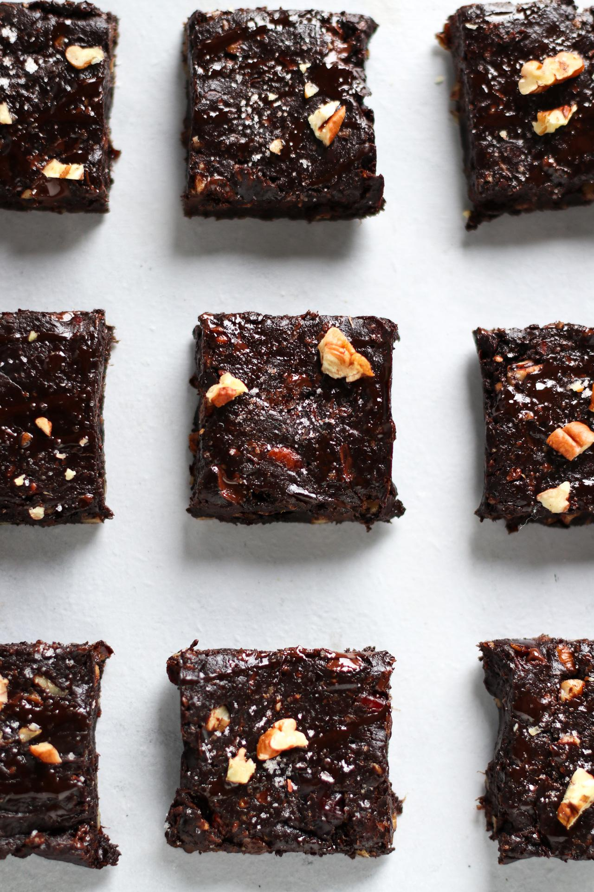

Ultra Fudgy Sea Salt Caramel Brownies

These brownies are the BEST. Not only are they just 6 ingredients,
but they are also super fast to make, and are the fudgiest,
most delicious chocolate packed squares you might ever put into your mouth!
Plus, they're made with some pretty wholesome ingredients!
Ingredients
- 2 cups (380 g) soft Medjool dates, pits removed
- 2 Tbsp (27 g) refined coconut oil, soft or melted*
- 1 Tbsp (15 mL) water
- ½ cup (55 g) roasted pecans
- ½ cup (53 g) Dutch processed cocoa powder
- ⅓ cup (50 g) chopped dairy-free dark chocolate
- flaked sea salt
Steps
- Preheat the oven to 350°F (180°C).
- In a food processor**, blend the dates, coconut oil, cocoa powder, and water until smooth, stopping to scrape down the sides as needed.
- Add the roasted pecans, chocolate, and a pinch of salt. Blend, stopping to scrape down the sides, but let some chunks of pecans and chocolate remain.
- Transfer the mixture into a parchment-lined baking dish, and spread evenly. Bake on the middle rack of the oven for 10 minutes.
- When removed from the oven, top with some more crushed pecans, chopped chocolate, and a sprinkle of sea salt if desired. Gently press these in to secure them.
- Let cool for 15 minutes before cutting. These brownies are fudgiest if kept in the fridge. Enjoy!